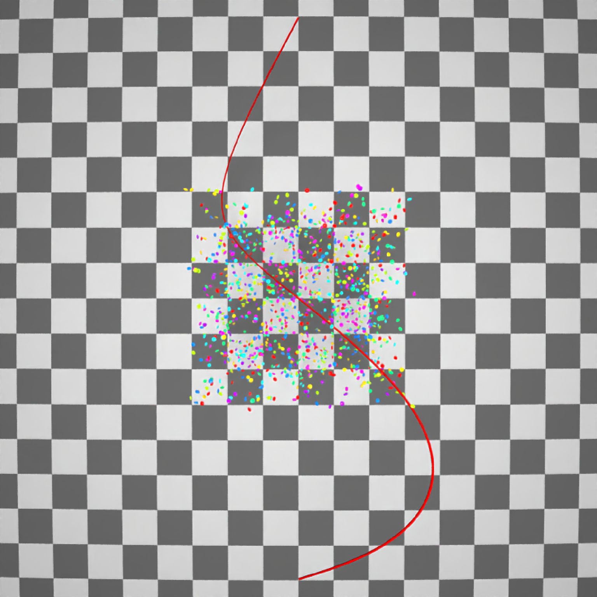
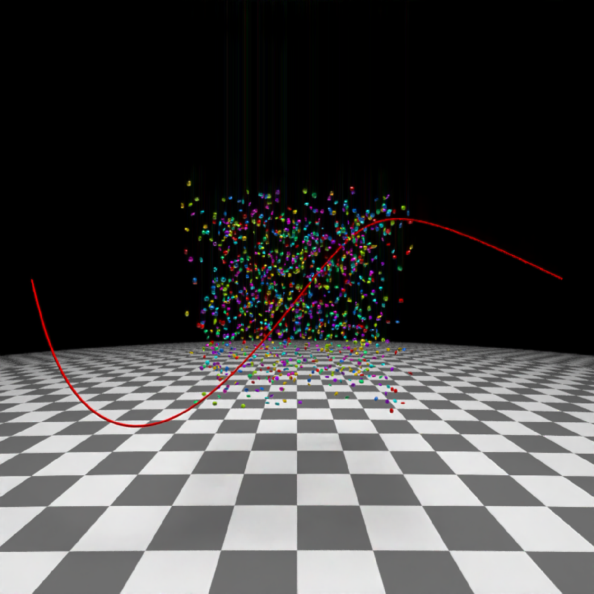
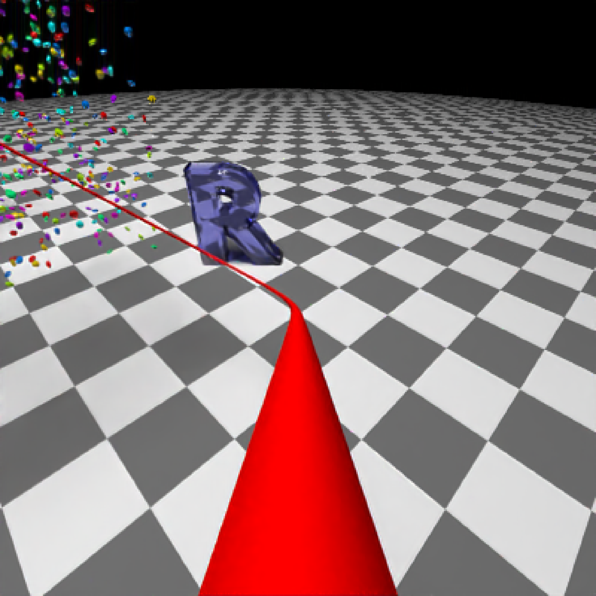
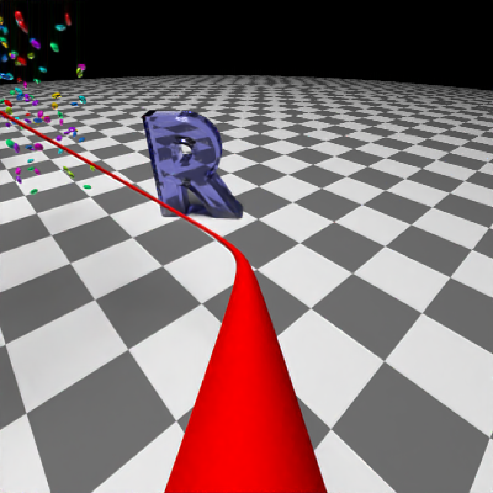
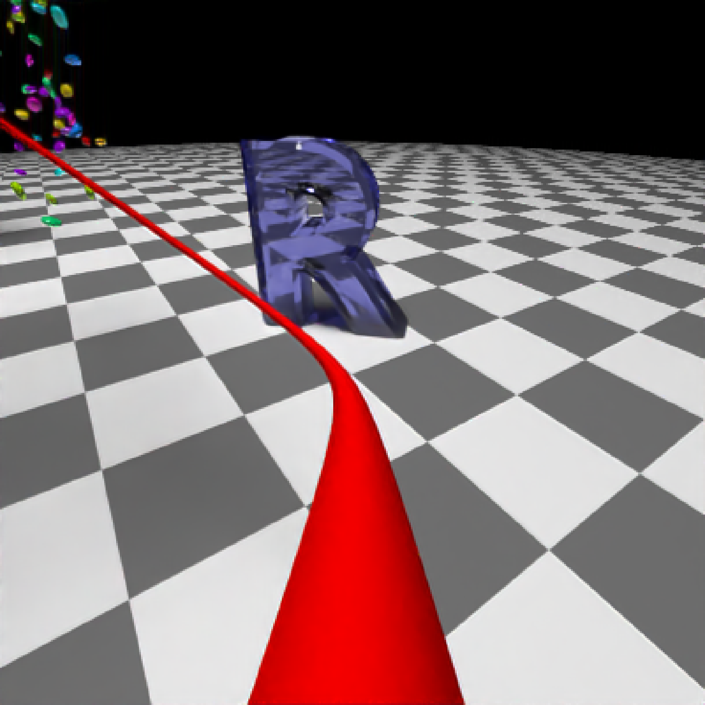

Takes a series of key frame camera positions and smoothly interpolates between them. Generates a data.frame that can be passed to `render_animation()`.
generate_camera_motion( positions, lookats = NULL, apertures = 0, fovs = 40, focal_distances = NULL, ortho_dims = NULL, camera_ups = NULL, type = "bezier", frames = 30, closed = FALSE, aperture_linear = TRUE, fov_linear = TRUE, focal_linear = TRUE, ortho_linear = TRUE, constant_step = TRUE, curvature_adjust = "none", curvature_scale = 30, offset_lookat = 0, progress = TRUE )
| positions | A list or 3-column XYZ matrix of camera positions. These will serve as key frames for the camera position. |
|---|---|
| lookats | Default `NULL`, which sets the camera lookat to the origin `c(0,0,0)` for the animation. A list or 3-column XYZ matrix of `lookat` points. Must be the same number of points as `positions`. |
| apertures | Default `0`. A numeric vector of aperture values. |
| fovs | Default `40`. A numeric vector of field of view values. |
| focal_distances | Default `NULL`, automatically the distance between positions and lookats. Numeric vector of focal distances. |
| ortho_dims | Default `NULL`, which results in `c(1,1)` orthographic dimensions. A list or 2-column matrix of orthographic dimensions. |
| camera_ups | Default `NULL`, which gives at up vector of `c(0,1,0)`. Camera up orientation. |
| type | Default `bezier`. Type of transition between keyframes. Other options are `linear`, `quad`, `cubic`, `exp`, and `manual`. `manual` just returns the values passed in, properly formatted to be passed to `render_animation()`. |
| frames | Default `30`. Total number of frames. |
| closed | Default `FALSE`. Whether to close the camera curve so the first position matches the last. Set this to `TRUE` for perfect loops. |
| aperture_linear | Default `TRUE`. This linearly interpolates focal distances, rather than using a smooth Bezier curve or easing function. |
| fov_linear | Default `TRUE`. This linearly interpolates focal distances, rather than using a smooth Bezier curve or easing function. |
| focal_linear | Default `TRUE`. This linearly interpolates focal distances, rather than using a smooth Bezier curve or easing function. |
| ortho_linear | Default `TRUE`. This linearly interpolates orthographic dimensions, rather than using a smooth Bezier curve or easing function. |
| constant_step | Default `TRUE`. This will make the camera travel at a constant speed. |
| curvature_adjust | Default `none`. Other options are `position`, `lookat`, and `both`. Whether to slow down the camera at areas of high curvature to prevent fast swings. Only used for curve `type = bezier`. This does not preserve key frame positions. Note: This feature will likely result in the `lookat` and `position` diverging if they do not have similar curvatures at each point. This feature is best used when passing the same set of points to `positions` and `lookats` and providing an `offset_lookat` value, which ensures the curvature will be the same. |
| curvature_scale | Default `30`. Constant dividing factor for curvature. Higher values will subdivide the path more, potentially finding a smoother path, but increasing the calculation time. Only used for curve `type = bezier`. Increasing this value after a certain point will not increase the quality of the path, but it is scene-dependent. |
| offset_lookat | Default `0`. Amount to offset the lookat position, either along the path (if `constant_step = TRUE`) or towards the derivative of the Bezier curve. |
| progress | Default `TRUE`. Whether to display a progress bar. |
Data frame of camera positions, orientations, apertures, focal distances, and field of views
#Create and animate flying through a scene on a simulated roller coaster # \donttest{ set.seed(3) elliplist = list() ellip_colors = rainbow(8) for(i in 1:1200) { elliplist[[i]] = ellipsoid(x=10*runif(1)-5,y=10*runif(1)-5,z=10*runif(1)-5, angle = 360*runif(3), a=0.1,b=0.05,c=0.1, material=glossy(color=sample(ellip_colors,1))) } ellip_scene = do.call(rbind, elliplist) camera_pos = list(c(0,1,15),c(5,-5,5),c(-5,5,-5),c(0,1,-15)) #Plot the camera path and render from above using the path object: generate_ground(material=diffuse(checkercolor="grey20"),depth=-10) %>% add_object(ellip_scene) %>% add_object(sphere(y=50,radius=10,material=light(intensity=30))) %>% add_object(path(camera_pos, material=diffuse(color="red"))) %>% render_scene(lookfrom=c(0,20,0), width=800,height=800,samples=32, camera_up = c(0,0,1), fov=80)#Side view generate_ground(material=diffuse(checkercolor="grey20"),depth=-10) %>% add_object(ellip_scene) %>% add_object(sphere(y=50,radius=10,material=light(intensity=30))) %>% add_object(path(camera_pos, material=diffuse(color="red"))) %>% render_scene(lookfrom=c(20,0,0),width=800,height=800,samples=32, fov=80)#View from the start generate_ground(material=diffuse(checkercolor="grey20"),depth=-10) %>% add_object(ellip_scene) %>% add_object(sphere(y=50,radius=10,material=light(intensity=30))) %>% add_object(path(camera_pos, material=diffuse(color="red"))) %>% render_scene(lookfrom=c(0,1.5,16),width=800,height=800,samples=32, fov=80)#Generate Camera movement, setting the lookat position to be same as camera position, but offset #slightly in front. We'll render 12 frames, but you'd likely want more in a real animation. camera_motion = generate_camera_motion(positions = camera_pos, lookats = camera_pos, offset_lookat = 1, fovs=80, frames=12) #This returns a data frame of individual camera positions, interpolated by cubic bezier curves. camera_motion#> x y z dx dy dz #> 1 0.0000000 1.0000000 15.0000000 0.5540753 0.3793760 14.4451790 #> 12 2.0426788 -1.2913413 12.9130580 2.5799782 -1.8970825 12.3261865 #> 23 3.9656263 -3.4752799 10.6121427 4.4319830 -4.0162782 9.9123005 #> 38 5.3641317 -5.1657043 7.6624089 5.4433167 -5.3265227 6.6815832 #> 55 4.5735555 -4.6134636 4.2864210 4.0394085 -4.1113644 3.6067639 #> 66 2.4543547 -2.5796685 2.0300934 1.8473580 -1.9839746 1.5040677 #> 76 0.1811561 -0.3313301 0.1449713 -0.4339193 0.2845633 -0.3473272 #> 85 -2.0849691 1.9522779 -1.7065252 -2.6813261 2.5607910 -2.2301639 #> 96 -4.2136709 4.1500150 -3.8037431 -4.7114121 4.6821070 -4.4889171 #> 111 -5.4478102 5.5801044 -6.8775827 -5.3230057 5.5394471 -7.8670199 #> 127 -4.2534993 4.6985864 -10.1903391 -3.7368466 4.2614804 -10.9263454 #> 140 -2.2089084 2.9392277 -12.7334457 -1.6207842 2.4245362 -13.3572923 #> aperture fov focal orthox orthoy upx upy upz #> 1 0 80 1.0000000 1 1 0 1 0 #> 12 0 80 1.0000157 1 1 0 1 0 #> 23 0 80 0.9999735 1 1 0 1 0 #> 38 0 80 0.9970717 1 1 0 1 0 #> 55 0 80 0.9996751 1 1 0 1 0 #> 66 0 80 0.9999997 1 1 0 1 0 #> 76 0 80 1.0000001 1 1 0 1 0 #> 85 0 80 1.0000637 1 1 0 1 0 #> 96 0 80 1.0001658 1 1 0 1 0 #> 111 0 80 0.9981058 1 1 0 1 0 #> 127 0 80 0.9998484 1 1 0 1 0 #> 140 0 80 0.9999911 1 1 0 1 0#Pass NA filename to plot to the device. We'll keep the path and offset it slightly to see #where we're going. This results in a "roller coaster" effect. generate_ground(material=diffuse(checkercolor="grey20"),depth=-10) %>% add_object(ellip_scene) %>% add_object(sphere(y=50,radius=10,material=light(intensity=30))) %>% add_object(obj_model(r_obj(),x=10,y=-10,scale_obj=3, angle=c(0,-45,0), material=dielectric(attenuation=c(1,1,0.3)))) %>% add_object(pig(x=-7,y=10,z=-5,scale=1,angle=c(0,-45,80),emotion="angry")) %>% add_object(pig(x=0,y=-0.25,z=-15,scale=1,angle=c(0,225,-20), emotion="angry", spider=TRUE)) %>% add_object(path(camera_pos, y=-0.2,material=diffuse(color="red"))) %>% render_animation(filename = NA, camera_motion = camera_motion, samples=100, sample_method="sobol_blue", clamp_value=10, width=400, height=400)#> Singular Matrix: #> nan nan nan 0.321851 #> nan nan nan -9.15857 #> nan nan nan -19.3703 #> 0 0 0 1 #>#> Error in render_animation_rcpp(camera_info = camera_info, scene_info = scene_info, camera_movement = camera_motion, start_frame = start_frame - 1, filenames = filename_str, post_process_frame = post_process_frame, toneval = toneval, bloom = bloom): Singular matrix in MatrixInvert# }